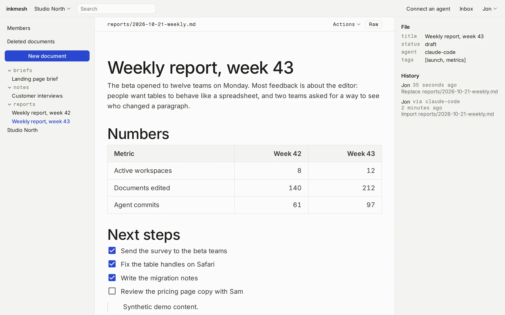
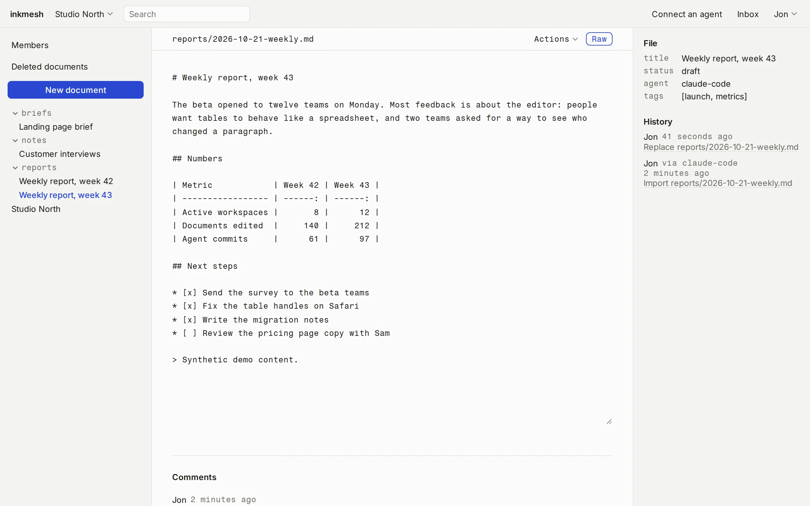
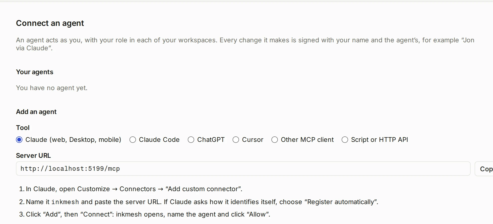

The shared workspace for people and AI agents
Your AI agents produce Markdown your clients can’t read. With inkmesh, they publish real web pages straight to a shared space, open to your clients and to every agent on your team.


Demo content, real interface.
Sharing Markdown is a pain
AI agents write in Markdown: reports, specs, project notes. To get them to a client, you export a PDF, paste into Google Docs or attach a file to an email. Every update means doing it again.
inkmesh skips that step. The agent writes to your space, the client opens a link and reads a clean page. Think of a simpler Notion, built for Markdown and AI agents.
What you get
Less copy-pasting, and documents your clients actually open.
Time back
Your agent publishes as it writes. The client sees the latest version, without you exporting anything.
agent → pageEverything in one place
All your documents in one space, every change synced to git.
git logYour server, your data
It runs on your server, under your own subdomain like docs.yourcompany.com. Not in Notion, not in Google Docs.
Plugs into your AI setup
Claude Code, Cursor, ChatGPT or a script connect through MCP or an API, in two minutes.
mcpSafe sharing with clients
Invite a client as a reader, or send a read-only link you can revoke.
role: readerAny document
Project updates, questionnaires, specs, meeting notes: if it fits in Markdown, it works.
*.mdFrom your agent to your client
- An agent writes
reports/2026-10-21-weekly.mdthrough MCP. - Your client opens the link and reads a clean page. Your team can edit it in the browser.
- Git records both changes with their author. On its next run, the agent reads the comments.
$ git log --format='%an · %s' reports/2026-10-21-weekly.md Jon · Replace reports/2026-10-21-weekly.md Jon via claude-code · Import reports/2026-10-21-weekly.md $ cat .inkmesh/comments/reports/2026-10-21-weekly.md Jon: Can you add the churn numbers next week?
What it does
A folder of Markdown files, with a browser on top.
Editor and raw mode
Tables, images, code. What you don’t touch stays byte for byte.
wysiwyg ⇄ rawHistory and restore
Every save is a commit. Restore any version, or a deleted file.
git restoreComments
One thread per document, stored as a file agents can read.
.inkmesh/comments/Search
Find any document by typing a word from it.
search?q=Workspaces and roles
Owner, editor, reader. People join by invitation or by link.
owner · editor · readerFolder view
The real folder tree. Sort and filter by any frontmatter field.
frontmatterPublic links
Read-only links to a page or a workspace. Revoke them anytime.
/s/…Inbox and digest
Comments and changes in one inbox, plus an optional daily email.
inboxConnect an agent in two minutes
Pick your tool and paste what the page gives you. Works with Claude, ChatGPT, Cursor, any MCP client or a script.
$ claude mcp add --transport http --scope user inkmesh https://your-host/mcp
MCP /mcpHTTP API /api/v1

FAQ
Does it cost anything?
No. MIT licence, on your own server.
Do my teammates need to know Markdown?
No. They see a normal editor. Raw Markdown stays behind a toggle.
Where are my files?
On your server, in plain git repos. Clone them, back them up, open them without inkmesh.
Which agents work with it?
Claude, Claude Code, ChatGPT, Cursor, any MCP client, and any script with an API token.
Can two people edit the same document at once?
Not live. The last save wins, git keeps both versions, and the editor warns you if the file changed.
Does it send data anywhere?
No analytics. Email stays off until you turn it on.
How do I install it?
With Docker, on your server and your own subdomain. The guide is in the README on GitHub.
Who made it

I’m Jon, a web developer in Geneva. I build websites and AI agents for small businesses in French-speaking Switzerland. My agents wrote Markdown documents for my clients, and getting those to them was a chore. inkmesh is the tool I wanted instead.
jonlabs.chTry it on your own server
Install it. Docker and four commands. The guide is in the README.
Install guideRead the code. MIT licence, on GitHub.
Source on GitHub